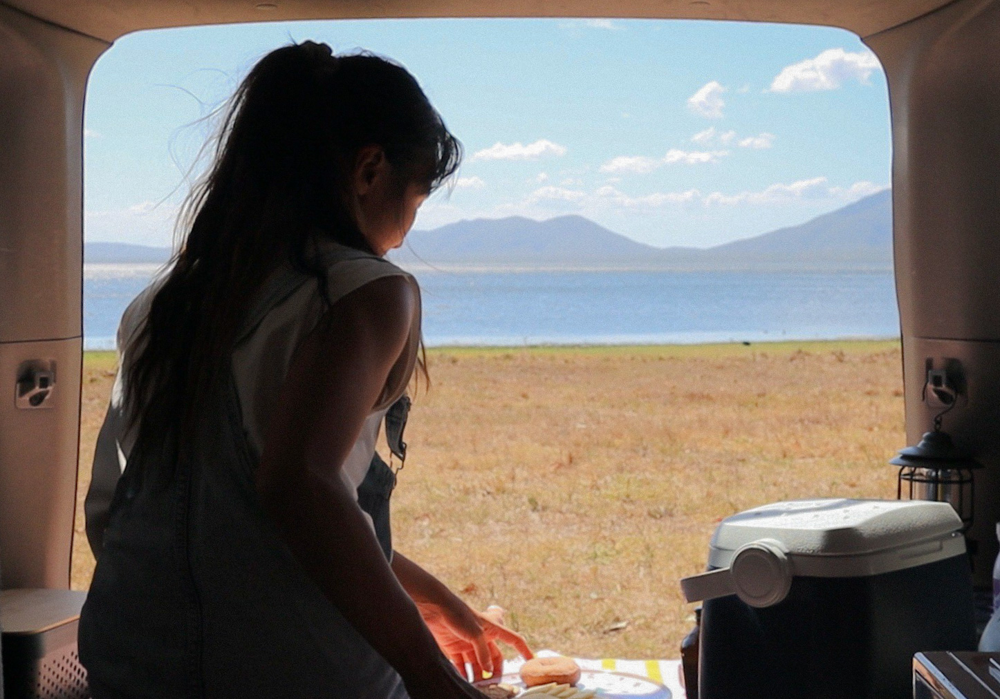
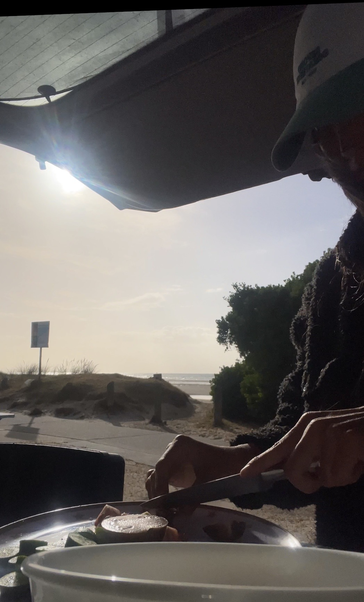
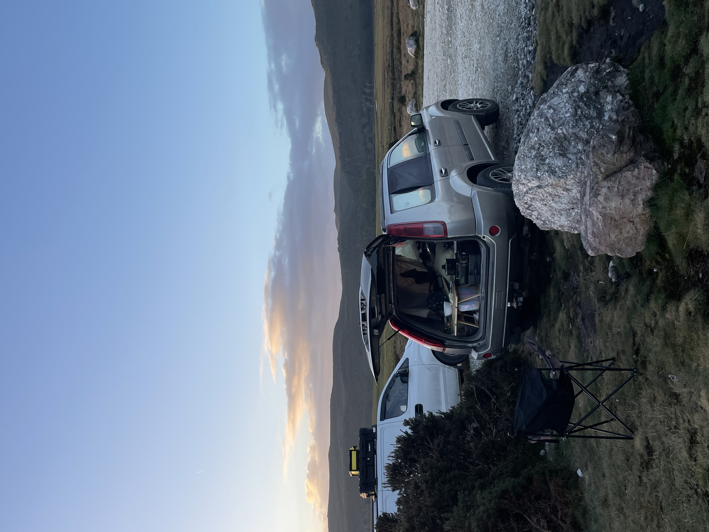

When I first came to Australia, I didn't have a car. To be honest, I wasn't sure if I even needed one. I was also afraid of buying a car. Walking everywhere felt normal to me, and I didn't mind relying on my own two feet.
Then, somewhere along the way, I changed my mind.
Since arriving in Australia, I had moved between places like Woolgoolga, Gold Coast and Sunshine Coast, taking different jobs whenever I relocated. I enjoyed the freedom of starting over in new places. But the real reason I came to Australia wasn't work. It wanted surfing.
I wanted to surf whenever I wanted. I looked for places to live near the beach, but they were expensive. The more I searched, the more I wondered how much money I would need to earn just to stay close to the ocean. It didn't make sense to me. I wanted a lighter life, one that would allow me to travel freely. One day, I imagined waking up to the sound of waves and being able to jump straight into the water. That's when the idea came to me.
What if I bought a car and lived in it?
Owning a campervan had always been a dream, but they were far beyond my budget. Then I looked at myself and thought, I'm a tiny person. Why can't I fit into a regular SUV? That's how I ended up buying a car in Australia.
I never imagined living without a house. As someone who values good sleep above almost everything else, I needed a setup that felt comfortable and safe. An SUV turned out to be perfect. I could carry my surfboard, have my own space, save money, and spend more time doing what I loved. I also found myself becoming interested in living with less. My goal was simple: take only the space I needed, leave no trace behind, and move on quietly. Almost as if I had never been there at all.
I left Noosa, my home base, and started travelling around Australia. Sometimes I stayed with friends. Sometimes I did house-sitting jobs. Eventually, I drove all the way down to Tasmania.
Most of the time, though, my car was my home.



There were days when I couldn't shower for a week. Surprisingly, it didn't bother me much. When survival becomes simple, everything starts to feel like a gift.
A hot shower.
A peaceful morning.
A healthy body.
A good wave.
Time with friends.
I became more aware of nature than I had ever been before. The warmth of the sun felt generous. I spent long days surfing under sparkling water, then napping beside my car with my wetsuit hanging out to dry. I watched sunsets without rushing away. I listened to the wind, the birds, and the ocean. Those moments became my greatest source of happiness and inspiration.
As my surroundings changed, so did the people I met. I met an elderly couple who had been travelling Australia in a campervan for over ten years. I met surfers who built their entire lives around chasing waves. I met people living in tents at campsites for months at a time, and others who chose life in a car because they didn't want to be tied down by a permanent rent.
Through them, I realised there is no single way to live. For much of my life, I was afraid of falling behind. I kept running, always thinking I needed to do more, achieve more, and move faster.
But somewhere on the road, I learned something different.
It is okay to live slowly.
And sometimes, slowing down is exactly how you find your way.